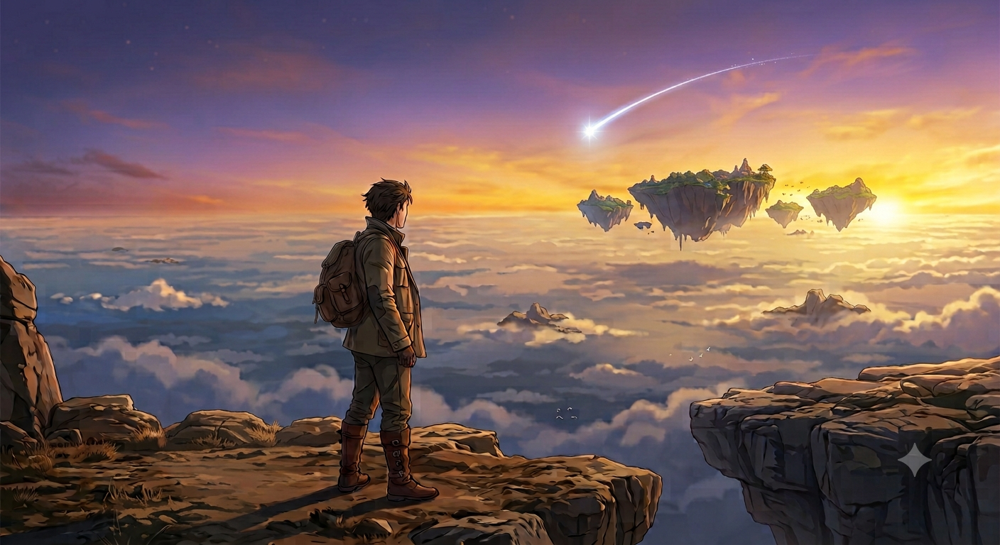

Chapter 6: What the Sky Remembers
Part 1 — The High Sky Islands
The cold changed shape somewhere around the fourth day.
It didn’t leave — the mornings still bit at exposed skin, the nights still demanded every blanket and every body pressed close to the fire — but the snow thinned with each mile east, giving way first to frost-hardened mud, then to simple, dry, biting cold with nothing white left to show for it. The forests changed too. The dead grey trees of the tavern’s outskirts gave way, gradually, to stretches of hardier growth that had weathered the Starfall’s touch more lightly — pines that still held their needles, undergrowth that hadn’t entirely given up.
They walked through all of it in the particular rhythm that long travel creates — quiet stretches where only footsteps and wind filled the air, and looser stretches where conversation wandered wherever it wanted to.
Figo told a long, meandering story about a fishing trip that had gone wrong in three separate and increasingly improbable ways, and somehow made it funnier each time a new complication appeared. James contributed color commentary that made the story worse and better at the same time. Trista corrected several of Figo’s exaggerations with the patient exhaustion of someone who had apparently heard this story before, in a different and equally implausible form. Atver walked slightly apart from all of it, hands folded behind his back, wearing the small, contented expression of a man enjoying a play he’d already read the ending to.
Vael listened more than he spoke. He was starting to learn the shape of them — not through revelation, not through crisis, but through the accumulation of small, ordinary things. The way Figo hummed under his breath when the road was flat and easy. The way Trista’s hands never quite stopped moving even at rest, as though some part of her was permanently ready to heal something. The way James’s jokes got sharper when he was tired, as though humor were a muscle he reached for reflexively under strain.
He was starting, without quite noticing it happening, to care about all of them.
He couldn’t sleep.
It was well before sunrise, the sky still holding onto its deepest dark, and Vael had spent the last twenty minutes attempting increasingly hopeless configurations against the hard ground, his rolled jacket doing very little in its role as a pillow. He finally gave up and lay still, looking at the dying coals of the fire and the shapes of his companions around it.
Trista slept curled around her staff like it was something precious rather than a weapon, her robe folded under her head, a strip of unidentifiable but clearly warm fur draped over her shoulders as a blanket. Even asleep, her face held a kind of watchfulness — the sleep of someone who had learned, somewhere, not to sleep too deeply.
Figo slept flat on the bare ground, no bedroll, no blanket, nothing beneath him but frost-hardened earth — and Sheela cradled against his chest with both arms, held the way a man holds the person he loves most in the world, which, as far as Figo was concerned, she was. He seemed entirely unbothered by the cold that had Vael shivering under two layers.
James, a short distance away, slept sitting upright against a tree trunk, his rum cask still clutched loosely in one hand. He was muttering — soft, disjointed fragments of speech, the unmistakable cadence of a man deep in a dream about something he clearly missed very much. Vael caught the word “ale” twice and something that might have been “one more round” and left it at that.
Atver was nowhere.
Vael sat up properly and looked around the small camp. No sign of the small elf — not curled anywhere, not standing watch, not visible at all.
Does he even sleep? Vael thought. It occurred to him, turning the question over, that in nearly a week of travel he had never once seen Atver asleep. Never seen him tired. Never seen him do much of anything except read, walk, and occasionally offer information with the calm of someone who had all the time in the world, which — Vael supposed — he essentially did.
He got up quietly, careful not to wake the others, and found a line of footprints leading away from camp — spaced, deliberate, almost too neat, as though someone had left them specifically to be followed.
The prints led him to the base of a tall outcrop of rock, rising black against the pre-dawn sky.
He looked up. Atver was already at the top, a small silhouette against stars that hadn’t yet given way to morning.
“Ah. Hello, child.” The voice drifted down, warm and unhurried. “You’ve come at the right time. Join me.”
Vael eyed the climb. It looked steep, and he was tired, and he had not entirely forgiven his body for the last week of walking. “Can’t you just fly me up with that magic of yours?” he called, only half joking. “Old man privileges.”
Atver’s laugh carried down, dry and genuinely delighted. “Ha! You’re a young lad — surely you can manage a rock. In my day I climbed mountains without stopping to catch my breath.”
“Oh, here I come,” Vael muttered, already reaching for the first handhold.
It was not easy. His arms complained. His fingers found purchase in cracks that seemed designed to discourage exactly this kind of activity. But he was not, whatever else remained uncertain about him, a weak man, and he made it to the top, hauling himself over the final ledge with a graceless scramble and sitting there a moment just to breathe.
Then he looked up.
The sunrise had just begun — the first pale gold breaking the horizon’s edge — and it was breaking across something that stole every word Vael had been planning to say.
Islands. Vast slabs of stone floating in open sky with nothing beneath them, no support, no explanation, drifting in slow formation against a sky still holding the last of its stars. From this distance they looked impossibly delicate — dark silhouettes rimmed in the coming gold, trailing thin mist from their undersides like clouds that had forgotten how to fall.
“This,” Atver said quietly, beside him, “is new.”
“This is—” Vael’s voice had abandoned him somewhere in his chest. He tried again. “This is new to you too?”
“Our first landmark.” Atver’s eyes reflected the growing light, calm and pleased. “Nobody has named it officially. Everyone simply calls it the High Sky Islands, because that’s what it plainly is, and no one has felt moved to improve on the description.”
He raised a hand and pointed toward one island in particular, further out, where something glowed — faint at first, then brighter, a point of light that moved with purpose against the dark stone.
“That,” Atver said, his voice sharpening with interest, “feels similar to the Starfall. I wonder what’s found that kind of power up there.”
The light arced suddenly — a streak, brilliant and fast, launching from the island’s surface in a trail that briefly outshone the coming sunrise, curving up and out over the open drop between islands like something that had decided gravity was a suggestion rather than a rule. It vanished behind a further island a moment later, and the sky held its breath, and then, faintly, impossibly, something like laughter carried across the vast empty distance — distorted by wind and altitude into something closer to an echo of a sound than the sound itself.
Vael stared. “This is—” He laughed, disbelieving. “This is gorgeous. Is this what’s left? Of our world after the Starfall?”
“It’s what remains,” Atver said, “and remaining, as it turns out, isn’t the same as ending. Humans adapt. Lands adapt.” He smiled faintly, looking out at the drifting shapes. “This is not the first hardship this world has faced, and it will not be the last. It has always recovered. Always adapted, given time.”
Vael looked at the islands a while longer, the light climbing steadily now, gilding the undersides of the floating stone in gold.
“What caused it?” he asked finally. “Did the Starfall reach even here?”
Atver’s eyes closed briefly, and when he spoke, something had shifted in his voice — old grief worn smooth by centuries of carrying it.
“The Starfall’s primary target was the capital. The Concord.” He said the name carefully, like something handled with tongs. “They sat at the center of this region. Grew powerful — too powerful, in the end, for any one steward to hold responsibly. A dear friend of mine led them, once. A student, if you’d like the honest word for it. He tried to warn them. Tried, for a long time, to hold back what the institution was becoming.” He opened his eyes. “But greed doesn’t listen to warnings. It consumed them, and when the Starfall came, it came for them fully. What was the Concord is a scar now. A reminder of exactly where pride and greed lead — nearly to extinction. Nearly.”
Vael sat with that. Something in his chest tightened without permission — a hot, unfamiliar pressure, sudden and specific.
“For some reason,” he said slowly, “my body feels nothing but hatred toward the — the Concord, was it?”
Atver looked at him for a long moment. He nodded, unsurprised.
“Nothing stays the same,” he said. “The Concord was only ever a nation in its prime, and nations have lifespans like anything else. What comes at the very end of a lifespan is, sadly, almost always the worst version of the thing that came before.” He gestured out at the islands. “These floated free when the debris struck this region. The Starfall was powerful enough to lift mountains, Vael. Don’t ever mistake it for a small thing.”
A voice reached them from below, faint at first, then rapidly less faint.
“You guys — where ARE you?! Vael! Old man! HELLOOO?!”
Vael leaned over the ledge. Trista stood at the base of the outcrop, hands on her hips, radiating a very specific and very familiar kind of fury.
“We’re here! Sorry, Trista!” he called down, in the tone of a man trying to defuse a situation before it fully arrived.
“There you are.” She did not look mollified. “Come on, we need to move. That Dracol isn’t waiting for anyone.” She glanced back toward camp, where — presumably — Figo and James remained exactly as unconscious as Vael had left them, and sighed with real feeling. “Those two get slower every single morning. They need their princess mornings, apparently.”
Vael grinned. He looked at Atver.
“Old man,” he said, “your flight magic is about to become very useful. I have a plan.”
He punctuated this with the worst, most theatrically evil laugh he could manage, which needed some work.
Down at camp, Figo was working through a sandwich of indeterminate origin with the slow, grumpy dedication of a man who resented being awake but respected the sandwich too much to eat it quickly. Sheela lay across his knees. James sat nearby with his morning cup in one hand, humming something tuneless and cheerful to himself, apparently unbothered by anything the universe had to offer him at this hour.
In the treeline behind them, three figures crouched in a low bush, doing an admirable job of not laughing yet.
A minute passed. Figo chewed. The forest held its usual morning quiet.
Then Figo went still.
“…Not to alarm you,” he said slowly, “but I don’t hear Trista anymore, James.”
James took a sip of his drink, entirely unconcerned. “Probably found an interesting plant.” He didn’t look up. He did not, in fact, see any obvious danger, and had long ago decided that most mornings that didn’t obviously contain danger could be trusted not to.
“Now,” Vael whispered.
Figo looked up at the exact moment something bright detached itself from the canopy above — a compressed ball of pure white light, falling with the deliberate accuracy of a woman who’d had a full week to perfect her aim. It detonated a few feet above both men in a silent, blinding flash.
“WAHH—” Figo’s voice hit a register that no man his size had any business producing.
James’s cup went flying. Both men froze, hands over their eyes, entirely and comprehensively stunned.
“WE’RE UNDER ATTACK!” James managed, his voice cracking with the effort of forming words through the aftershock of the flash.
“TRISTA!” Figo bellowed. “VAEL! OLD MAN! ANYONE!”
That was when the tongue found them.
It arrived from the shadows at ground level, long and glistening, trailing a cord of thick, sticky saliva that connected both stunned men in a single unfortunate strand before either of them registered what had happened. The Flesh Toad’s tongue withdrew as quickly as it had come, leaving both warriors dripping and abruptly, violently awake.
“AAAAAA—” James’s shriek, when it finally arrived, came out in a register that could charitably be described as unmanly. He did not care.
Vael hit the ground laughing, unable to hold himself upright, tears actually forming. Trista landed a moment later — a perfect, graceful three-point landing directly from the tree above, entirely composed, entirely delighted with herself.
“Wakey wakey,” she said sweetly.
“That’s not fair,” Figo said, wiping toad saliva from his face with an expression of profound betrayal.
“At least our teamwork’s improving,” James said, trying very hard to sound unbothered and mostly succeeding, aside from the residual dampness on his sleeve. “Also, that scream. That was the bird. Not me.”
“Sure it was, buddy,” Trista said.
“It was.”
“I won’t tell the shadow lady about it,” Trista said, entirely too sweetly, “if you’re ready in five minutes.”
James threw his cask into his pack with the speed of a man suddenly and completely motivated. Figo, muttering something about dignity and toad saliva, wiped Sheela down carefully and strapped her back into place, and within the promised five minutes the whole camp was packed and moving, the morning’s indignity already folding itself into the growing pile of stories the team would apparently never let each other forget.
The path east ran through a stretch of hardy, wind-bent trees, the ground rising in low, rolling shelves of stone that suggested the land here had once been much more violently rearranged than it currently appeared. The air smelled of cold stone and pine resin, clean in a way that made the destruction elsewhere feel briefly distant.
Then the path curved sharply around an outcrop, and Vael, walking point, stopped.
“Look!”
Ahead, half-swallowed by undergrowth at the path’s edge, a caravan lay tipped on its side. Abandoned. One wheel had come free entirely and lay several feet from the wreckage, and the canvas covering had torn along one long seam, flapping faintly in the cold wind.
“I smell trouble,” Figo said immediately, scanning the treeline on both sides, Sheela already coming off his back.
“We should check for survivors.” Trista was already moving, quick and low, circling toward the wreck.
There were none. The caravan was entirely empty — no bodies, no belongings left behind that suggested a controlled departure. Just abandonment, sudden and total.
“There are signs of a struggle here.” James crouched near the overturned frame, his usual looseness gone, his attention narrow and focused. He touched a dark patch on the splintered wood, careful not to press too hard. “Recent. This blood isn’t dry yet.”
He looked up. His eyes followed a trail — dark spots, spaced with the irregular rhythm of something dragged or something fleeing, leading away from the wreck and deeper into the trees ahead.
Nobody said anything for a moment.
“Well,” Atver said, mildly, into the silence. “That’s a promising start to the day.”
---

tags: [the aftermath]
Chapter 6: What the Sky Remembers
Part 2 — What Fire Remembers
Before the Starfall.
The sky that night had no right to be so beautiful.
It stretched clear from horizon to horizon, black deepening to violet at its edges, scattered with more stars than any single pair of eyes could properly count. Two boys lay on their backs in the long grass above the village, close enough that their shoulders touched, watching it the way boys do when they still believe the sky is simply beautiful and not also, somewhere above their understanding, already breaking.
“Loren.” Laren’s voice was quiet, thoughtful, the tone he used for the questions that mattered to him. “Have you ever wondered what’s past our village?”
Loren turned his head slightly, studying his twin’s profile against the stars, and let out a short, warm laugh. “No. Why would I? We’ve got food. A roof. Family.” He nudged his brother’s shoulder with his own. “Are you unhappy, Laren?”
“No! Far from it.” Laren’s answer came quick, certain. “I love this village. But nothing lasts forever if nobody works to keep it thriving. That’s why—” He hesitated, then pushed forward with the particular bravery of an idea he’d clearly been sitting on for a while. “Why don’t we become traders?”
Loren looked back up at the stars. “Traders?”
“Yes! We travel, we see the world, we bring back goods that help everyone here. And we earn — really earn, Loren. Enough to matter.” Laren’s voice had picked up momentum, the words tumbling now. “Enough to get Father out of his debts. Enough that Mother doesn’t have to work herself into the ground every season just to keep us fed.”
Loren was quiet for a moment, turning it over. Then he laughed again, softer this time, warmer.
“Traders, huh.” He held up one hand, pinky extended. “Sounds incredible. Let’s promise it, then. Properly.”
Laren hooked his own smallest finger around his brother’s, and beneath a sky that still had weeks left before it began to fall, the two of them sealed something neither of them yet understood the weight of.
Laren took a slow, deep breath, like a boy standing at the edge of a future he could already see clearly.
He would never reach it.
The village was on the outer edge of what the Starfall touched — far enough from the center that the sky didn’t split apart entirely, close enough that the ground still shook and the air still filled with falling light and the screaming started within minutes and didn’t stop.
It was not the devastation that would later bury a great capital or crater the world’s heart. It was smaller, and in its smallness, no less terrible for the people living through it — homes collapsing under debris that fell from a sky gone the wrong color, fires catching in thatch roofs faster than anyone could organize to fight them, the ground cracking in long shallow fissures that swallowed carts and toppled fences.
“LAREN! LAREN, WHERE ARE YOU?”
Loren was running through what had been his family’s home an hour before, calling his brother’s name into smoke and collapsed timber, his voice cracking further with every repetition.
He found him near the back wall — what was left of it — pinned beneath a fallen roof beam, the weight of it settled across his lower back at an angle that told Loren everything before his mind caught up to the information.
“Loren…” Laren’s voice was thin, but he smiled when he found his brother’s face. “You’re safe. Thank god.”
“Don’t worry.” Loren was already at the beam, hands finding purchase, pulling with everything his body had. It didn’t move. “I’ll get you out — HNGH—” He tried again. The beam didn’t care. “SOMEONE! PLEASE! WE HAVE A SURVIVOR HERE!”
No one answered. No one was close enough to hear, or no one close enough could spare the moment.
“Loren. Stop.” Laren spent what sounded like all the strength he had left on those two words. “We’ll be traders. Remember, brother?”
Loren’s tears came all at once, hot and uncontrollable, dropping onto the beam, onto his brother’s still hand.
“Yes,” he managed. “Yes — you’ll — you’ll make us rich—”
Laren’s eyes closed, gently, the way eyes close when a person is simply very tired.
He did not open them again.
“DON’T LEAVE ME—” Loren’s scream tore out of him and into the smoke and the falling light and the general ruin of everything, and nobody came, because everybody’s world was ending in its own small, personal way at exactly the same moment. “PLEASE — NO—”
A week later.
Loren walked the trader road that ran along the village’s edge with the particular hollowness of someone who has stopped fully existing in the present moment. His feet moved. His eyes tracked nothing in particular. His mind held only two phrases, turning over and over, worn smooth from repetition.
Become rich. Become a trader.
He didn’t notice he was standing in the middle of the path until the caravan was nearly on top of him.
“HEY, KID!” The trader hauled his horses to a stop with visible irritation, already muttering before he’d fully halted. “Move it, I’ve got money to make out here — Saints, these damn kids, wandering around like they own the road, I don’t have time for this—”
Loren didn’t move. Didn’t seem to register the voice as directed at him at all.
The trader climbed down, crossed the distance with the brisk annoyance of a busy man dealing with an obstacle. “Hey — kid — you deaf? I’m working here—” He grabbed Loren’s arm to shove him aside.
His hand caught fire.
The trader screamed, stumbling back, clutching his burned palm — and Loren finally looked at him, and his eyes had gone the deep, roiling red of something that lived inside a furnace.
“Don’t,” Loren said, very quietly, “touch me.”
The trader was still screaming, on the ground now, and Loren wasn’t finished. His arm rose — an unfamiliar gesture that his body seemed to know regardless — and pointed.
“Burn to crisp.”
The trader became ash before the sound of his own scream had finished traveling.
Loren stood over the scorched circle of dirt where a man had been standing a moment before, and something in him broke entirely open.
He dropped to his knees. His hands were shaking, staring at the space where a person had existed, his mind scrambling for some other explanation, some version of events where this hadn’t happened, where he was still just a grieving boy on a trade road and not — not this.
“I didn’t—” His voice came out ragged, disbelieving. “I didn’t mean—”
But the ash didn’t rearrange itself back into a man. The world declined to offer him that mercy.
He knelt there for a long time.
Then, with the same numb, mechanical motion that had carried him through the last week, he stood, walked to the abandoned caravan, and began going through its contents.
Become a trader. The goods went into his pack — what he could carry, what seemed valuable. Like you promised. He set the rest alight, watched the caravan burn down to nothing, erasing whatever trace of the morning might otherwise have remained.
It was, in its way, the beginning of a career.
Present day.
The forest thickened as the blood trail led them deeper — the hardy pines giving way to older growth, undergrowth tangled and unfamiliar, the light dimming under a canopy that hadn’t seen a proper trim in longer than the world had existed in its current shape. The air smelled of cold sap and turned earth.
They found him in a small clearing, slumped against a fallen trunk. Sixteen, maybe seventeen. Badly hurt — a deep gash across his ribs, the wound crusted dark, his breathing shallow and uneven.
Trista moved first, instinct overriding everything else, already reaching for her satchel.
“Wait.” Vael’s hand came up in front of her, blocking her path. His eyes were serious, focused entirely on the boy in the clearing. “I sense trouble if we get closer.”
James’s head tilted, studying the boy with an expression that had gone very still. “Your senses are right.” He nodded slowly. “This kid is not a normal kid.”
“He’s a killer,” James added, quieter.
Figo’s hand was already on Sheela. “Should I end it?”
Atver watched from the back of the group, hands folded, saying nothing, his expression unreadable.
Trista’s stance shifted — the healer’s readiness in her hands replaced by something more careful, more defensive.
“Laren…” the boy said, so quietly it barely carried. “I’m sorry. I failed you.”
Then his skin began to scorch.
“Fire magic,” James said, already forming a dark orb between his hands. “Don’t get close.”
“On my mark,” Vael said, low and fast. “We attack from all sides — we have the numbers, and he’s already hurt. Trista, shield Figo. We take him down. We don’t kill him. We need answers.”
“Understood,” came the reply, from all of them at once.
Figo charged the instant Trista’s shield settled over him, a shimmer of pale light closing around his armor. The boy’s mouth opened and fire came out in a torrent, intense enough to stagger Figo’s momentum — but the shield held, and Figo pushed through it, Sheela already swinging.
“You think a fireplace is enough to stop my wife?!” Figo bellowed, the blade cutting a wide arc that forced the boy’s guard sideways.
The fire redirected, blooming wide enough to blind — and in that cover, Vael’s Spirit Bird dropped from above, and behind the boy, the Flesh Toad rose from the undergrowth, its damp grey hide entirely unbothered by the heat, tongue lashing out to pin him in place.
“UNGH—” The boy twisted against the hold, saw Vael descending, and breathed another wave of fire straight at him.
“JAMES — NOW!” Vael shouted, mid-dive.
“Right you are, Mr. Skyman.” James’s dark orb swallowed the flame whole, snuffing it mid-air, and Vael landed the final distance and drove the boy into a hold he had no leverage left to escape. Trista’s rope came next, threaded through with magic that pulled tight and simply consumed whatever power tried to move against it.
She knelt, hands glowing faint, just enough healing to keep him stable. Not enough to help him fight.
“Nice teamwork, children,” Atver said, finally speaking.
“Burney over here was throwing quite the tantrum,” James added, already looking pleased with himself.
“We have a lot of questions for you,” Vael said, serious, looking down at the boy. “Let’s make camp. Recover. Then talk.”
The boy was still unconscious when they made camp, and stayed that way until well past nightfall — until, abruptly, he woke screaming.
“BROTHER! DON’T LEAVE ME, LAREN, PLEASE—”
The first thing he saw, opening his eyes into the firelight, was Figo — a wall of a man, scarred and armored, his shadow alone enough to still most conversations before they started.
“Laren.” Figo’s voice was low. “Is that your brother?”
The boy’s eyes cleared enough to register his situation — bound, surrounded, caught. He strained against the rope on instinct, tried to call the fire again, found nothing answering. The magic-consuming weave held firm.
“Kid, struggling just makes it worse for you.” Figo crouched slightly, trying, in his own blunt way, to be reassuring. “Answer us. What’s your name?”
“…Loren,” the boy finally said.
“Loren. Right.” Figo nodded, already moving to the next question, and the one after that, questions stacking faster than the boy could process any of them. “Why are you out here? Where’s the trader? Why was his caravan empty—”
“Figo.” James’s voice, from the treeline. “Let me handle this.”
“He’s a killer, James.”
“I know.”
Vael and Trista busied themselves with the evening meal a short distance off. Atver had settled against a rock with his book open, occasionally glancing up to make a small note, apparently equally invested in Loren’s story and whatever unfamiliar insect had just crossed his boot.
James crouched near Loren, unhurried, and took a slow sip from his cask.
“So. Loren.” He studied the boy for a moment. “Who hurt you?”
Loren’s eyes cut sideways, wary. “…I got attacked.”
James laughed — short, sharp, genuinely amused. “You? Attacked? Kid, you’d have burned them to ash before they got within arm’s reach of you. Poof. One less problem in the world.” His voice dropped, all humor gone. “Answer honestly. Or I stop being patient.”
A dark orb bloomed between his hands — and from somewhere inside it, faint and terrible, came the sound of distant screaming. Even Figo, several feet away, visibly shivered.
Loren’s fear spiked, his eyes darting to Figo rather than James, some instinct reading the larger man as the more immediate threat.
James caught it. Understood what it meant.
“Figo.” He didn’t look away from Loren. “Go check on Atver. I’ve got this.”
Figo hesitated, clearly unconvinced, but the years of trusting James’s read on a situation won out. “Fine.” He stood. “Don’t you die on me.”
“Not in the plans today,” James said. “Don’t worry.”
Once Figo had gone, Loren finally spoke.
“I killed him. The trader.” His voice was flat, hollowed out. “Burned him to ash.”
James’s orb dimmed and dissolved, his expression unreadable.
“Figured as much. He got a piece of you before he went, though. Lucky for you we found you first.” He settled down properly beside the boy, close now, no longer performing menace. “You’ve got a brother.”
“Had,” Loren said. “He died.”
“Starfall?”
“…Yeah.” Loren’s voice cracked on the single word, tears he was fighting hard to hold back.
“I’m sorry,” James said, and meant it.
A quiet stretch passed. Wind moved through the branches above them. Somewhere, a night bird called once and went silent.
“You know,” James said eventually, “I’ve got twenty brothers and sisters.”
Something in Loren’s face shifted — a flicker of something raw, almost envious, before he caught himself.
“Before you start picturing twenty versions of whatever you had with your brother,” James continued, watching him carefully, “that’s not how it works. Last I heard from any of them was years ago. Before the Starfall. We’re scattered across this whole broken world now, and I don’t know which of them are alive. Which ones are alone. Which ones needed help I couldn’t give them.” He turned the cask slowly in his hands, not drinking from it. “It’s the thing that keeps me up at night. When I’m not drinking enough to stop it.”
Loren’s expression had gone from envy to something gentler. “You don’t know anything about them? That’s—” He swallowed. “That’s awful.”
James looked at him properly then.
“Life’s tough. The Starfall hit everyone. Feeling like this — it’s normal.” He looked up, at the black sky overhead, stars scattered thin behind drifting cloud. “But I like to think whatever we do now, today, should be something our brothers and sisters would be proud to see. Whatever that looks like for each of us.”
Loren broke.
The tears came all at once, the dam finally giving way. “I never meant for any of this,” he choked out. “I just — I wanted to keep his promise. That’s all I wanted.”
“I know,” James said softly.
He reached into his coat and produced a coin — old, heavy, clearly valuable — and tucked it into Loren’s pocket.
“Take this. It’s worth more than you’d guess. Sell it, start trading — properly this time. No more burning people who annoy you.” A faint smile. “And get your power under control. There’s a school for that, not far from here.” He raised his free hand, dark magic curling from his fingers to sketch a rough map in the air, holding just long enough for Loren to commit it to memory. “You’re good at making promises, apparently. So make me one. Never kill an innocent person again. And become what your brother wanted — the honest way.”
“I—” Loren’s voice cracked. “You shouldn’t let me go. I should—”
“No.” James cut him off, flat and final. “I don’t do that. Now promise me.”
“…I promise. Thank you. Thank you.”
James cut the rope.
Loren sat there a moment, staring at his own free hands like he’d forgotten what they looked like without restraint.
“Thank you, sir,” he said finally.
“Anytime, kid. Now go, before the others get back.”
Loren went.
James sat alone by the dying fire for a long moment after, his cask untouched the entire time, resting his head back against the trunk behind him and closing his eyes until the sound of returning footsteps reached him.
“YOU DID WHAT?!”
Trista’s voice cracked across the camp the moment she understood what had happened.
“He promised he wouldn’t do it again,” James said, entirely too calm.
“He’s a KILLER, James!”
“The odds were good. Relax.”
“A kid’s promise!” Trista threw her hands up, pacing a tight, furious circle. “I’m going to kill him. Him, specifically.” She stalked off toward the treeline, muttering something further that nobody quite caught.
Vael and Figo exchanged a look — trust in James, still intact, but layered now with a shared unease neither of them said out loud.
“Well,” Figo finally offered. “Nothing to be done about it now, is there.”
“Not really,” Vael agreed.
“Let’s rest,” Vael said, after a moment. “We keep moving at first light.”
Atver, closing his book, smiled to himself. “We’re close to the village,” he said. “Based on what I’ve observed of the terrain — I suspect a rather significant surprise awaits us there.”
They broke camp the next morning under a clean, cold sky, the previous night’s tension folding itself, as it always did, into the rhythm of the road. The land had begun to change again — the trees thinning further, the ground rising in gentle terraces, and somewhere far above, faint against the pale morning, the drifting shapes of the High Sky Islands kept pace with them like distant, patient companions.
By late afternoon, smoke came into view on the horizon — not the black smoke of disaster, but the thin, steady grey of hearth fires. Lots of them.
The village, when they finally reached it, was thriving.
Fields ran in neat, tended rows on the outskirts, worked by people who moved with purpose rather than desperation. Livestock grazed behind sturdy fences. Children chased each other between market stalls stacked with goods — real goods, food and cloth and tools, more variety than any of them had seen since before the Starfall. Guards patrolled in clean, matched uniforms, calm and unhurried. Somewhere, someone was playing music, badly but happily, and a small crowd had gathered to laugh at the effort.
Vael stopped walking entirely for a moment, just taking it in.
“This—” He shook his head slowly. “This is nice.”
“Finally,” Trista breathed, practically glowing. “Finally some life in this grim age.”
Figo grinned, taking in the market stalls with the appreciative eye of a man who recognized good food when he smelled it. James, beside him, had gone quiet — not sad, not afraid, just still, staring at the thriving village with an expression none of them had ever seen on him before.
Stunned.
A pair of guards approached, straightening as they noticed the group. “Hunters, is it?” one of them said, brightening. “Ah, perfect timing. Our Empress requests to meet with every hunting party that passes through.”
“Us?” Vael blinked. “Why us specifically?”
“Standing instruction, sir. Every group. Won’t take long, I promise.” The guard gestured them forward, warm and unbothered. “This way, please.”
They followed him through the village center — past a well-kept square, past a fountain that actually ran clear water, toward a large hall at the settlement’s heart, its architecture clean and pale stone, windows catching the last of the afternoon light.
They stepped inside.
The hall beyond was simple but unmistakably a seat of power — banners in deep blue and silver hanging from high beams, a long room leading toward a raised dais, and standing there, composed and unmistakably in command of the space around her, a woman in fitted battle-worthy robes the color of storm clouds, a circlet of dark metal at her brow, her bearing radiating the specific, settled authority of someone who had built everything in this room herself and knew exactly what each brick had cost.
James stopped dead in the doorway.
“SISTER?!”
The woman’s composed expression cracked entirely, replaced by wide-eyed, disbelieving shock.
“BROTHER?!”
Vael, Trista, and Figo turned to look at James in perfect, stunned unison.
“SISTER?!?!“
tags: [the aftermath]
Chapter 6: What the Sky Remembers
Part 3 — What the Depths Remember
The throne room, if it could be called that yet, was still very much becoming one.
Half the walls were finished stone, fitted and smoothed with real craft; the other half were reinforced timber, braced with iron brackets that hadn’t had time to rust, clearly meant as a placeholder for stone that hadn’t been quarried yet. Banners hung from the high beams in deep blue and silver — new enough that the stitching along one edge was still slightly uneven, the thread not yet faded by seasons of sun. Scaffolding stood folded against the far wall, waiting for whoever had use for it next. The throne itself sat on a dais of raw, unpolished stone, the seat built from what looked like a repurposed ship’s chair, reinforced and reupholstered until it commanded the room anyway, imperfections and all.
It was a room that hadn’t decided yet whether it was a palace or a work site, and wore both identities without apparent embarrassment.
James’s sister — Jade, unmistakably, unshakably in command of the space around her — gestured them toward a cluster of seats near the dais, and the team settled with varying degrees of composure.
Figo sat with Sheela across his knees, both hands wrapped around the haft tighter than the situation strictly called for, his eyes doing careful, methodical sweeps of the room’s exits. Vael’s mouth had not fully closed since the doorway; he was still working through the sheer improbability of the last thirty seconds. Atver had already produced his book and was making small, delighted notes, the expression of a scholar who had just been handed an unexpected and excellent research opportunity. James, for his part, had recovered his usual loose composure with impressive speed, lounging in his seat like this was any other Tuesday.
“Been a while, Jadey.” He offered her a lazy grin. “How’s it going?”
Jade studied him a moment before answering — not unkindly, but with the measuring look of someone who had learned long ago exactly how much of James’s ease was real and how much was performance.
“James.” She let the name sit, then turned her attention to the rest of the group. “You’ve found yourself a hunting party. That’s unexpected.” Her eyes moved over each of them in turn — evaluating, not unkind. “Unsurprising it’d end up being this particular mix, though.”
“What’s that supposed to mean?” Trista asked, arms crossed, unwilling to let the comment pass unexamined.
“It means,” Jade said, a faint, dry edge in her voice, “that my brother has always had a gift for finding people patient enough to put up with him.” Her gaze cut back to James, something searching in it now. “You look serious, James. That’s new. Since when do you chase something dangerous instead of talking your way around it?”
James opened his mouth, found nothing immediately ready, and closed it again. It was, Vael noted with some private amusement, the first time he’d seen James caught flat-footed by anything.
“We’re in a bit of a hurry,” James said instead, recovering. “Monster business, and all that. Any chance you could point us toward those lovely floating rocks up there?”
Vael cleared his throat and stepped in before James could bury the point any further. “We need to reach the Molten Imperium. There’s an Enraged Dracol loose — we believe it’s taken shelter somewhere in what’s left of the old empire, and it needs to be dealt with before it fully recovers.”
“I’m all ears,” Jade said, straightening, her expression sharpening into something entirely businesslike.
Vael laid it out properly — the fight at Hunter’s Rest, the losses, Atver’s theory about the creature’s likely direction, the narrowing window before it healed enough to move again. As he spoke, he introduced each of them in turn: Figo, whose nod was stiff but respectful; Trista, who inclined her head with the careful formality of someone raised to respect a seat of power even when she didn’t yet trust the person sitting in it; Atver, who offered an elegant, unhurried bow that seemed to genuinely please Jade.
She listened through all of it without interrupting, her expression steady, occasionally asking a sharp, precise question — how large, how fast it healed, what had actually worked against it — the questions of someone used to weighing threats professionally rather than reacting to them emotionally.
When Vael finished, she sat back, quiet for a moment.
“That’s a serious undertaking,” she said finally. “For a group your size, against something with that kind of regeneration.”
“We’re aware,” Vael said.
“Good. I’d worry if you weren’t.” She considered them a moment longer, then nodded once, decisively. “We saw it pass, some weeks back. It spared us, thankfully, kept flying east toward the Wastes.” She gestured toward the windows. “It’s your fortunate day. We do have a way there.”
She rose and crossed to the nearest window, beckoning them over. Atver was there before anyone else, practically vibrating with academic interest.
Below, dominating the village’s eastern edge, stood a tower — hollow, its interior visible through a latticework of scaffolding and rope, the structure creaking audibly even from this distance. At its base, ten men strained in rhythm, hauling a thick cable hand over hand, the whole apparatus groaning with the effort.
“This is Skygate’s proudest achievement,” Jade said. “The world’s first elevator to the sky. But nothing here is free.”
“What do you need?” Vael asked.
“I have a soldier expedition that hasn’t reported back. They were mapping bridge routes between the nearer islands — we’re building toward a permanent settlement up there. Something’s been interfering. Varkador, most likely — large birdlike things, beaks that go through iron like parchment. They’ve taken a liking to nesting at altitude, and it’s made them considerably more territorial than we accounted for.” Jade’s jaw tightened slightly. “I want to know what happened to my people. If you can find that out on your way through, I’ll consider us square.”
“Understood,” Vael said. “We’ll look.”
“Earliest I can grant the elevator is tomorrow morning.”
“Tomorrow?” Vael’s frustration slipped through despite himself. “We don’t have much time to spare.”
“I’m aware. It’s still tomorrow.” Jade’s tone left no room for negotiation, though something in her expression softened slightly at his obvious urgency. “In the meantime — I’d like to invite my brother and his party to dinner. My treat.” Her eyes settled on James, something warmer flickering beneath the businesslike surface. “We have some catching up to do, little brother.”
James’s smile went slightly strained. “…Sure. Sounds great.”
“Guards will see you to rooms for the night.” Jade turned, already moving toward other business, then stopped, looking back. “Vael. Stay a moment. We’re not finished.”
Vael hesitated, glanced at his team — Trista’s raised eyebrow, Figo’s slight frown, James’s carefully blank expression — and gave them a small nod. “I’ll catch up with you all soon.”
They filed out behind the guards. Vael stayed.
“Follow me,” Jade said.
The stairs behind the dais descended into a part of the building that had clearly not been built for guests. Torches lined the narrow passage at long intervals, their light guttering against rough stone that hadn’t been smoothed or finished at all — old stone, older than the village above it, foundations that had clearly stood here long before Skygate decided to grow on top of them.
They reached a door at the bottom, iron-banded, and Jade pushed it open into a long, low chamber.
Weapons lined the walls — racks upon racks of them, some clearly ceremonial and untouched in years, others worn smooth with regular handling. Blades of every era mingled together, old imperial steel beside newer, cruder post-Starfall forging. Dust lay thick over some sections and was entirely absent from others, marking which parts of this vault still saw regular use.
“You’re a Dragodor,” Jade said, moving through the space with the easy familiarity of someone who had walked it many times. “Your kind carry a specific aura. Once you’ve learned to feel for it, it’s not something you can miss.”
“People keep knowing more about me than I know about myself,” Vael said quietly.
“So you’ve truly forgotten everything. Your childhood. Your mother.” It wasn’t quite a question.
Vael closed the distance between them. “You knew her?”
“I did.” Jade stopped walking. The playful edge from upstairs was entirely gone now. “We hunted together, years back. Before all this.” She was quiet a moment. “I’m sorry, Vael. She didn’t make it.”
He’d known — his dream had never once shown him a version where she survived — but hearing it confirmed, spoken plainly by someone who had actually known her, landed with a weight the fragments in his own head had never quite managed.
He didn’t say anything for a while. Jade let him have the silence.
“What was she like?” he finally asked. “I only have her voice. I can’t see her face, no matter how hard I try.”
Something in Jade’s expression eased, memory softening the careful control she’d been holding since the stairs.
“She wore white,” Jade said. “Always. Practical robes, but she kept them spotless even in the field, which used to drive the rest of us mad. Brilliant tactician — the best planner I ever hunted alongside. She’d map out an engagement three moves ahead of everyone else in the room.” A faint, fond smile. “She had her flaws, same as anyone. Once she committed to a plan, she followed it. Fully. Even when the ground shifted under her and the smart move was to adapt.”
“That sounds dangerous.”
“It nearly got us killed, once. A hunt that didn’t behave the way her charts said it would, and she held the line anyway, certain the numbers would catch up.” Jade’s eyes went distant. “They didn’t. We barely made it out.” A pause. “But that same stubbornness saved a man’s life a season later. Everyone else wanted to retreat and leave him. She wouldn’t. Walked back in alone and pulled him out.” She shook her head slowly. “Your mother was never simple, Vael. Nobody worth remembering is.”
Vael absorbed that, turning it over like something he could hold.
“In the months before the Starfall,” Jade continued, quieter now, “she changed. Started disappearing at night — said she was ‘reading the sky.’ Came back with charts, notes, growing more anxious by the week. Kept saying the Pattern was fraying. None of us understood what she meant. I don’t think she fully did either. But she knew something was coming before any of us believed her.”
“She tried to warn people,” Vael said slowly. Not quite memory. Closer to certainty.
“She tried,” Jade agreed. “The world wasn’t ready to listen.”
She moved to a small case set apart from the general racks — deliberately separate, deliberately cared for, the dust here disturbed recently and often, as though someone visited it regularly. She opened it.
Inside sat a ring — old, plain at first glance, a dark, weathered band with a small dull stone set into it. Looking closer, faint engravings traced its surface, worn nearly smooth by age and handling.
“The Ring of Galesburg,” Jade said, lifting it carefully. “It draws on the wielder’s own magic — takes a portion of it and converts it into a concentrated blast. Costly to use. But effective, when you need something more direct than what you already carry.” She held it out. “It was hers. She gave it to me the day she left our hunting group, as a memorial — something to remember her by, in case we never crossed paths again.” A faint, sad smile. “I think some part of her already suspected we wouldn’t.”
Vael looked at the ring and didn’t reach for it.
“I can’t take that,” he said. “It’s yours. She gave it to you.”
“She gave it to me because I was the one standing there,” Jade said simply. “Not because it belonged with me more than it belongs with her son. I’ve kept it safe for years, Vael. But keeping it in a case down here does nothing for anyone. It should be doing what she’d have wanted it to do — protecting the person she died protecting.”
Vael hesitated a moment longer. Then he reached out and let her place it in his palm.
It was heavier than it looked. Warmer, too — faintly, like it had been sitting in sunlight rather than a dark vault.
“Thank you,” he said quietly.
“Take care of it,” Jade said. “And take care of yourself while you’re at it.”
They stood a moment in the torchlight, the weight of the ring settling into Vael’s hand and, somewhere alongside it, the weight of everything she’d just told him.
“There’s something else,” Jade said, after a while. “Something I want you to hear from me directly, rather than finding out sideways later.”
Vael waited.
“I’m part of the Molten Vigil,” she said. “Our base — the Molten Imperium — is gone, destroyed with everything else. But we survive. Work in the shadows, still, the way we always have.” She held his gaze, steady. “I know what you’re about to feel. The Vigil’s history isn’t clean, Vael. It’s done things I don’t defend and can’t undo. But these past two months, since everything fell apart, I’ve been trying to build something different out of what’s left of it. Something that actually serves people instead of using them.” She paused. “Reclaiming the Molten Imperium — driving that Dracol out of our old ground — that’s the first real step in that plan.”
Vael turned this over carefully. Something in him — not quite memory, closer to instinct — flagged the name with old unease. They will do anything. Anything at all, if they’ve decided it serves them. He didn’t know where the certainty came from. He trusted it anyway.
“How does me killing a Dracol help you fix an organization’s reputation?” he asked.
“Because if you succeed — if a Dragodor is the one who takes back our most significant asset — you won’t just have done us a favor. You’ll have earned real standing. Rank. A voice in how the Vigil operates going forward, not as a token, but as someone the whole organization has to reckon with.” Jade’s eyes didn’t waver. “The Vigil’s reach is vast, Vael. Agents, resources, information, in nearly every corner of this fractured world. Someone with genuine power inside that structure — someone who actually cares what happens to the people it touches — could redirect all of that. Toward saving lives, instead of managing them from the shadows.”
Vael thought of Ragnik. Of Raul. Of five graves behind a tavern that existed because of choices made under pressure, with imperfect information, by people doing their best.
He thought about what it might mean to never again be the one scrambling with imperfect information — to have the reach to actually see a threat coming and stop it before it cost anyone anything.
“If I do this,” he said slowly, “and if it gets me a voice in how the Vigil runs — the first thing I want changed is how much gets decided in the dark. No more shadows for their own sake.”
Something that might have been genuine respect crossed Jade’s face. “Agreed. That’s exactly the kind of voice I’m hoping to add.”
“I’m still not your ally,” Vael added. “Not yet. I’m watching. This has to actually be what you say it is.”
“That’s fair,” Jade said. “I’d expect nothing less from Saela’s son.”
Vael let out a breath he hadn’t realized he was holding. “My father. Do you know anything about him?”
Jade shook her head slowly. “Nothing certain. Saela left our group some time before the Starfall — never told me exactly why, she kept her personal matters close. The timing lines up with when she’d have needed to meet him, whoever he was. I’ve always assumed it happened after she left us. Beyond that—” She spread her hands. “I truly don’t know.”
“Was there anyone else?” Vael asked. “Anyone left from my clan, who might know more than you do?”
Jade’s expression turned careful, gentle. “As far as I know, Vael, your mother was the last Dragodor I ever crossed paths with. If there’s anyone else out there, I’ve never heard of them.” A pause. “I’m sorry. I wish I had a better answer.”
Vael nodded slowly, absorbing that particular loneliness — a clan of one, a history he was rebuilding entirely from other people’s memories.
“One more thing,” he said. “Varesa.”
Jade’s expression flickered — careful now, considered. “What about her?”
“She’s Vigil. I’ve met her. Fought alongside her, actually.” Vael studied Jade’s reaction. “What is she to you?”
“An operative. One of the more independent ones — she answers to very few people, and explains herself to fewer still.” Jade chose her next words with visible care. “She has her own agenda running underneath whatever the Vigil asks of her. Her own beliefs about what all this is for. I wouldn’t trust her fully, Vael. Not because I think she means you harm — I don’t know that she does — but because I don’t think anyone fully knows what she wants. Including, possibly, herself.”
Vael was quiet a moment, turning that over. It matched something he’d felt himself, standing at the edge of a treeline weeks ago, watching a shape that shouldn’t have been able to vanish the way it had. “That tracks. I’ve felt the same, around her, since the start.”
“Trust that,” Jade said. “Your instincts are better calibrated than you give them credit for.”
Vael nodded slowly, filing it away alongside everything else the evening had handed him — the ring’s weight still settling in his pocket, his mother’s face still just out of reach, a clan of one standing in a vault full of someone else’s old weapons.
“I should get back,” he said. “Long day tomorrow.”
“Get some rest.” Jade held his eye a moment longer before he reached the door. “And Vael — thank you. For hearing all of this the way you did.”
He gave her a small nod and climbed the stairs back toward the light.
Vael returned to his guest room not long after, the ring settled deep in his pocket, his thoughts considerably heavier than when he’d descended those stairs.
Down the corridor, the room they’d given James was small but carefully kept — new timber walls still faintly scented with sawdust and cut pine, a narrow bed with a folded wool blanket at its foot, a plain wash basin on an equally plain stand. One window faced east, framing the elevator tower’s black silhouette against the last grey light of evening. A single oil lamp burned low on the sill, more company than illumination.
James had turned his chair to face that window, straddling it backward, arms folded across the top rail, chin resting on his forearms. He hadn’t moved in some time. His rum cask sat within easy reach on the small table beside him, cork still seated, untouched since morning.
The knock was soft. He knew who it was before she spoke.
“Come in, Jadey.”
Jade let herself in and paused a moment just past the threshold. Here, with no dais beneath her and no guards at the door and no soldiers waiting on a decision, something in her shoulders eased that hadn’t eased once since Vael’s party had walked into her hall. She crossed the small room and dropped into its other chair, tucking one leg beneath her, looking entirely unlike an Empress and entirely like an older sister at the end of a very long day.
“You didn’t drink through the whole meeting,” she observed, glancing at the cask.
“Been an eventful week.” James didn’t elaborate, and she didn’t push. He turned fully around in his chair now, forearms braced on his knees, watching her properly. “How’ve you been, sis? Really.”
Jade was quiet a moment, her eyes drifting around the small, plain room — taking in its newness the way someone takes in a thing they built with their own hands and still can’t quite believe exists. “Building something. Trying to, anyway.” She looked back at him. “Have you heard anything? From any of the others?”
James shook his head slowly, something in his posture folding inward. “Nothing since before. You?”
“Finn, maybe.” Jade’s voice softened, her gaze drifting to the window, to the dark shape of the tower beyond it. “A caravan came through here, months back — talked about a builder matching his description, working reconstruction near the Shattered Seas. Might not have been him. I never got confirmation.”
“Finn would be good at that,” James said, something wistful pulling at the words. “Always had his hands in something.”
“Mira, I don’t know. Nothing at all.” Jade’s jaw tightened, just briefly, her hands folding together in her lap. “I think about her more than I’d like to admit.”
They sat with that a moment, the quiet comfortable in the particular way old grief shared between two people always is.
“Remember the Founders’ Day stew?” James said suddenly, straightening, a grin breaking through despite everything.
Jade’s whole posture changed at once — she sat forward, delight chasing the sadness clean off her face. “Oh no. You are not bringing that up.”
“I absolutely am.” James leaned forward too now, elbows on his knees, hands moving as he talked, painting the memory in the air between them. “I knew that stew was going to be a disaster. Could feel it clear as day — old Maren was three bad nights of sleep away from ruining the whole pot, and I was not going to let that happen to the one good meal we got all season.”
“So we snuck into the kitchen at midnight,” Jade said, laughing now despite herself, leaning into the memory with him, “and completely redid her spice measurements—”
“—and doubled the meat, because I have never once in my life trusted a probability that didn’t also involve more meat—”
“—and she came in the next morning convinced she’d lost her mind, because her ‘bad batch’ had somehow turned into the best stew anyone had ever eaten in that entire house.”
“She accused three separate children of sabotage,” James said, wiping an actual tear from the corner of his eye, shoulders shaking. “Never once suspected the nine-year-old.”
“I nearly gave us away laughing during the accusations,” Jade said. “You kept the straightest face I’ve ever seen on a child that age.”
“High stakes,” James said solemnly, though the corner of his mouth was fighting him the whole time. “Stew doesn’t lie.”
They laughed together properly then, the sound filling the small room with something that had nothing to do with grief at all — James doubled slightly forward in his chair, Jade wiping at her own eyes now, both of them briefly, entirely, just siblings again.
“I found you a rope and pulled you out of that tree once,” Jade said, when the laughter finally settled, her voice gentling. “You were what, six? I was thirteen. Scariest thing I’d done up to that point.”
“I remember,” James said, quieter now too. “You told me you weren’t scared of anything after that.”
“I lied,” Jade said simply. “I was terrified the entire climb.”
James looked at her for a long moment, something searching in it. “Why’d you leave, after the home closed? Why here?”
Jade rose then, restless, and crossed to the window — the same view James had been holding all evening, the tower’s silhouette now fully dark against a sky gone the color of old iron. “Needed somewhere to be useful,” she said, arms crossing loosely over herself. “Somewhere that needed building, not just surviving. Skygate wasn’t much when I found it — a handful of families and a lot of fear. Somebody had to start organizing things, and I turned out to be reasonably good at it.” She shrugged, the gesture deflecting more than it revealed. “You?”
“Found the Hunter’s Guild,” James said, watching her back rather than the window now. “Turns out a group of people who fight monsters for a living doesn’t mind much if you can see which fights are worth taking.” A small, genuine smile. “First place that ever wanted the gift instead of being afraid of it.”
Jade turned from the window, crossed back, and, briefly, reached down to squeeze his hand — firm, quick, the same gesture she must have used a hundred times on a smaller version of him, in a home that no longer existed.
“I’m glad you found them,” she said. “I mean that.”
“Me too,” James said quietly.
They sat a while longer as the last of the light gave out entirely beyond the glass, two people who had once shared a home full of strangers who became family, now scattered across a broken world, finding each other again for one quiet evening before it scattered them apart once more.
Morning came grey and cold, the elevator tower looming at the village’s edge like something built by people who had refused to accept that the sky was no longer meant to be reached.
The platform was simple — reinforced wood, iron railings, a counterweight system of old ship’s anchors visible through the tower’s open lattice frame. Ten men stood at the base, gripping the massive rope in practiced unison.
“HIIIGH — HOOO!” The call rang out, rhythmic, half work-chant and half prayer, and the rope pulled taut, and the platform beneath their feet lurched and began, slowly, to rise.
Jade stood below, one hand raised in farewell, the wind catching the edge of her robes.
“Come back safe, little brother!” she called up, as the gap widened. “All of you!”
James raised his cask in a small salute. He still hadn’t opened it.
The village dropped away beneath them, and then the fields beyond it, and then the tower itself seemed to shrink into the landscape as they climbed higher, the wind growing sharper, colder, carrying the strange mineral scent of altitude.
Above them, closer now than it had ever been from the ground, the High Sky Islands waited — vast and drifting, catching the pale morning light along their stone undersides.
The mission had begun.